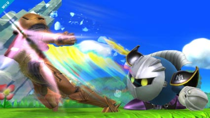
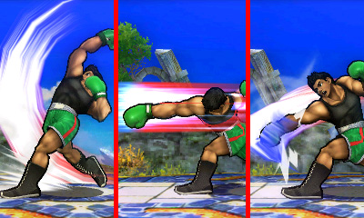
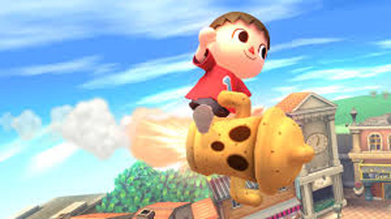
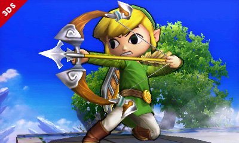
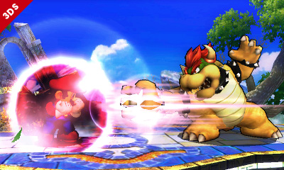
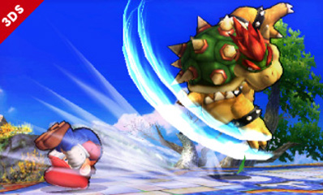
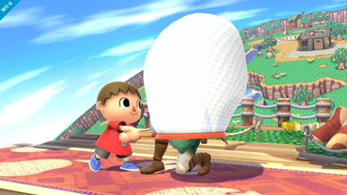
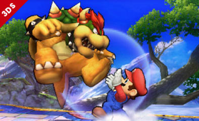

Super Smash Bros 4 Guide

SSB4 Basic Controls
Press Any Button To Begin

On the 3DS, there are basically six different controls to use in combat: Control Pad, Attack, Special, Jump, Shield, and Grab. Each one is pretty much essential for playing the game, in both offensive and dfensive aspects. Each character has their own variation of each control, corresponding with their unique build and sytle. Controls may be customized for preferences, but this explanation will use the picture as a demo. There is another control pad beneath the circle pad, but it is used for taunts, which is not essential in battles. Those are just for fun!
Control Pad: The circle pad gives all the directions of combat, controlling all movements. All of the other buttons require the circle pad to have a variety of actions. The circle pad obviously moves your fighter around, but it also directs the kind of attacks executed. The circle pad also has the option to jump, but is not recommended.
Attack: This control is used to perform basic combos, tilt attacks, and smash attacks. Basic combos are performed by pressing the A button repeatedly, mainly used to increase damage on opponents (left). To perform tilt attacks, the side, up, or down control must be already initiated before pressing A, showing a one-move hit. This is a simple way to inflict a bit of damage and knockback to opponents. Finally, smash attacks, which are the most powerful, require pressing a direction control and A at exactly the same time. Each character's smash attacks are unique, but all can be charged up for a bigger blow. These are usually best for delivering the final blow after racking up enough damage (right).
 Specials: Specials are what makes every character truly unique. All characters have four types of specials: neutral (B), side, up, and down. The directional specials require simultaneously pressing the B button and the direction. Neutrals are usually projectiles or a chargable blow (right). Side specials are usually a lunge forward or more projectiles (left). Up specials are most often a recovery move, some dealing damage while others don't. Under most circumstances, the execution of an up special leads to an ending lag, recovering only by landing on the ground or getting hit. Down specials vary the most.
 Jump: Jumps are rather self-explanatory. Most characters have a double-jump, whereas others may have multiple jumps. Although jumps are obviously essential for recovery, they also play a major roles in aerial combos. By using A, there are also neutral, side, up, and down aerials in midair. Aerial combos are also handy finishers, but they cannot be charged up like smash attacks.
Shield: All of the characters have a shield, most simply a protective bubble, with one exception of an actual shell. Either way, both have an endurance when utilized, and is recharged simply by not using it. Shields protect the fighter from damage and drastically reduces knockback (left). When a shield is "broken," the fighter is momentarily immobolized. There is also perfect shielding, which is the perfect timing of a shield against an attack, not reducing your shield at all when performed. Fighters may also sidestep, spot dodge, and aerial dodge, none of which use the shield, but rather evasiveness. Sidestep is inputting a direction while the shield is executed, making the fighter swiftly move in that direction while avoiding incoming attacks (right). Spot dodging is shielding and pressing down simultaneously to momentarily dodge attacks, but requires precise timing. Aerial dodging is simply shielding in midair, but dodges attacks like spot dodging rather than performing an actual shield.
 Grab: Grabs are best used to interrupt and immobolize your opponents. They have to be performed when your opponents are directly in front of you, within your fighter's reach (left). Grabs also build up some damage, but not as much as basic combos. Directional grabs may also be performed (side, up, down) by simply inputting the direction when grabbing (right). To combo a grab, continuously press the grab button leads to multiple hits, then press a direction to fling the opponent corresponding with it. If no directions are inputted, then the opponent will eventually be released after about five hits.
 